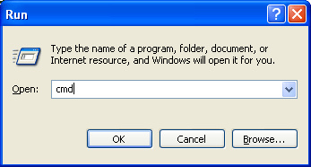
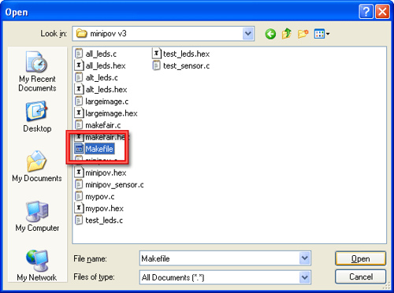

Now that its assembled, you can reprogram the chip with persistance of vision code, to display custom messages & images!
To program the chip you will need a computer with a serial port (basically, any PC) or a USB/Serial converter for computers without serial ports.

This is what a serial port looks like
I have tried KeySpan brand converters and the GWC AP1100 (PL-2303 chipset, $17 from NewEgg or Jameco) with suceess.If you're using that or some other PL-2303 chipset ones on MacOS X then be sure to install this version instead of the one that comes on the driver CD. There's also been reports of success with the FTDI chipset, this one is $11 from tigerdirect. Note that not all converters work (especially the real cheap ones) so if you own one already, try the one you have (and let me know!) but there's virtually no way for me to 'make it work with X brand that I have'.
Note: if you are trying this out with a new microcontroller (i.e. not from a kit) you'll need to burn the fuses first, otherwise it won't work right and might not be programmable. Run make burn-fuse before you type in make program-minipov, while the minipov is powered and connected to the serial port. You might have to do it a couple of times if its failing.
Note 2: When plugged into the serial port, the LEDs may light up oddly or dimly, this is normal.Still, the minipov3 must be powered on to be programmed.
Right now there's thorough instructions for:
First, you'll need to setup WinAVR. Step by step instructions are here. Once you're done with that, come back here and do the remaining steps
If you're using a USB to Serial converter cable, you'll need to make some small modifications to the WinAVR package to support the MiniPOV3:
- Download the zip file of the modified AVRDUDE software
- Uncompress it onto the desktop
- Open up the folder C:\WinAVR\bin (or wherever WinAVR was installed, perhaps C:\WinAVR-2008-01-06\bin)
- Rename the two files avrdude.conf and avrdude.exe in C:\WinAVR\bin to avrdude-backup.conf and avrdude-backup.exe
- Copy the two files avrdude.conf and avrdude.exe from the uncompressed folder in step 2 into C:\WinAVR\bin
Now download the zip of example source code for the Minipov3
Uncompress it somewhere convenient, the C:\ drive is a good place and is short enough to type in the command line

Open a command window


And cd (change directory) to the directory where you expanded the source code files (here, I expanded it into C:\ so the files are in C:\minipov3\ note the quotes allow me to specify a name with a space in it, otherwise it will get confused)
Run dir or ls and verify that there is a file called minipov.hex

Plug in the MiniPOV into the serial port, and turn on the battery pack (it must be powered to be programmed even if its looking like it 'turns off' when attached to the serial port)
Now its time to figure out what COM port you are using. By default almost all Windows computers have only COM1 but if you are using a USB adaptor or have a different configuration, you will have a different COM port. Open up the Device Manager (under the System control panel) and look under Ports


If you are not using COM1, you will have to edit the file for the microcontroller programmer to tell it where to look for the Minipov3. Open the file named Makefile file in the C:/minipov directory with a program like Wordpad (included with windows) be sure to select "All Documents" type in the "file type" dropdown menu as Makefile doesnt end in .txt or .doc.

Change the AVRDUDE_PORT to COM2 or COM3 or whatever you're using

Save the file as a plain text file.
Next, if you're using a USB to serial adapter cable, open up the file C:\WinAVR\bin\avrdude.conf in Wordpad and search for "dasa" so that it will take you to the part shown below. Make sure you see a line with "delay = 2000" in it as shown below. That means that we are telling the programmer to go slow (wait 2 milliseconds between commands) because otherwise it gets confused. If you're not using a usb to serial converter, this line isnt necessary, but it doesnt hurt either.

Save the file as a plain text file. Now go back to your command window you had opened before. Run make program-minipov, this will start the programming procedure.

If you're using a USB/serial converter, itll take a long time (up to 3 minutes!) to program the MiniPOV. You can adjust the delay to try and shorten the time. If you're getting errors try increasing the time in the avrdude.conf file. 2000 to 3000 is a good starting point, make it larger (5000 or more) to increase the delay.
If you get a bad response, such as
avrdude: initialization failed, rc=-1
Double check connections and try again
It means you probably have something connected up wrong. Check your soldering, are there any bridges or unsoldered parts? are the diodes in correctly? Is the chip seated well? Is it turned on? Try connecting directly to the computer (not using a serial extension cable) or try a different USB to serial adaptor. Don't use -F to override the initialization check even though avrdude suggests it! It will not make things work, it will only make debugging more confusing!
Once you've gotten the programming procedure running, you can now create your own new and exciting messages!
Can't get it working? Dont worry, help is available in the forums!
First, you'll need to setup avr-gcc and related tools. Step by step instructions are here. Once you're done with that, come back here and do the remaining steps
All the software is installed, now you just have to get the minipov3 firware!
Step 8. Setup MiniPOV firmware
Download the minipov3 firmware, uncompress it and put the minipov3 folder into your Home directory.
Plug in your USB/Serial converter, making sure the driver is installed properly. If you're using a PL2303 chipset type adaptor, use this driver which works much better than the ones often distributed with these adaptors.
Next you have to figure out what the name of the USB adaptor device is. In a Terminal window,
type: ls /dev/cu.*
and look at the output. It should be something like /dev/cu.usbserial in this case its /dev/cu.usbserial-FTCTYG5C whatever that means.

If you're using an FTDI-chip based adapter, it will show up as /dev/cu.usbserial-FTCxxxx. If you're using a PL2303 chipset adapter, it'll show up as /dev/cu.PL2303-1B1
Step 8b. Download patched avrdude if necessary
For some reason, FTDI-chip based adapters need some special help programming these chips. You'll need to use a modified verson of avrdude so download the package from here. Replace /usr/local/AVRMacPack/bin/avrdude and /usr/local/AVRMacPack/bin/avrdude.conf with the patched versions you just downloaded.
Step 9. Program some chips!
Power up your working MiniPOV and plug it into the adapter. Now in a Terminal window, type in avrdude -p t2313 -c dasa -P /dev/cu.usbserial-FTCYG5C
The -p t2313 indicates that this is a attiny2313 type chip
the -c dasa indicates its a serial port programmer
the -P /dev/cu.usbserial-FTCYG5C indicates where to find the USB-serial converter

You should get a similar output. If the device signature is wrong or if the chip didnt respond, or if you get a bad response, such as:
avrdude: initialization failed, rc=-1
Double check connections and try again
If could be that the delay is not long enough. Open up the file /usr/local/AVRMacPack/bin/avrdude.conf using TextEdit and and search for "dasa" so that it will take you to the part shown below. Make sure you see a line with "delay = 2000" in it as shown below. That means that we are telling the programmer to go slow (wait 2 milliseconds between commands) because otherwise it gets confused.
Try increasing the delay value to 3000 or 4000.
If it -still- doesnt work, it means you probably have something connected up wrong. Check your soldering, are there any bridges or unsoldered parts? are the diodes in correctly? Is the chip seated well? Is it turned on? Try connecting directly to the computer (not using a serial extension cable) or try a different USB to serial adaptor. Don't use -F to override the initialization check even though avrdude suggests it! It will not make things work, it will only make debugging more confusing!
Next, open the Makefile in the minipov3 firmware directory with TextEdit and look at the top couple of lines:

The Makefile automates most of the typing, so things like the port, programmer type and chip are defined once. Change the AVRDUDE_PORT assignment from COM1 (a windows serial port) to the serial port you found earlier, like shown. Dont change anything else. Now save the file and go back to the Terminal

Type in make program-alt_leds which will program the chip with the alt_leds.c program.

It should be successful. If it isnt, try increasing the delay until you get verified working results.
Once you've gotten the programming procedure running, you can now create your own new and exciting messages!
Can't get it working? Dont worry, help is available in the forums!
- Download the zip of example source code
- Uncompress and cd into the source directory.
- Run make and verify that avr-gcc was found and everything compiled all happy (there should be a bunch of .hex files now)
- Plug in the MiniPOV into the serial port, and turn on the battery pack (it must be powered to be programmed even if its looking like its powered off of the serial port)
- Edit the Makefile in the minipov directory to change the AVRDUDE_PORT to /dev/cuaa0, /dev/ttyS0, /dev/ttyUSB0, /dev/cu.KeySerial1 or /dev/cu.usbserial or whatever you're using. (Check your distribution docs for info on what the serial ports are called!)
- Run make program-minipov, this will start the programming procedure.
(You should cheat and look at the screenshots below for Mac OS X as they are nearly identical to Linux/Unix)